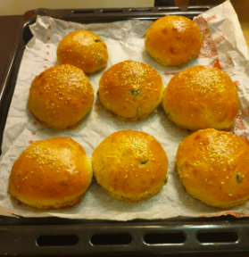

O MNĚ
RECEPTY
FOTOGALERIE
KONTAKT
O MNĚ
RECEPTY
FOTOGALERIE
KONTAKT
O MNĚ
RECEPTY
FOTOGALERIE
KONTAKT
O MNĚ
RECEPTY
FOTOGALERIE
KONTAKT

Tajemství každého burgeru je houska, a pak samozřejmě všechno to ostatní, co do něj patří - nehledejte v tom složitosti.
Tohle je postup, který budete potřebovat na Daníkův signature double smashburger, který se v mém bistru „Šťastný pupík“ jednou bude servírovat jako hlavní jídlo.
BULKY MASO DRESINGZákladem přípravy každé bulky je Tangzhong! Bez něj to prostě už dělat nechcete.
Tangzhong /čteno tangžong/ je způsob přípravy, díky kterému je možné dosáhnout opravdu nadýchaného, měkkounkého pečiva. Jeho původ je v Asii, pravděpodobně v Japonsku. Technicky jde o to, že při teplotě kolem 65°C začně škrob v mouce želatinovat a vytvoří gel. Ten pak v budoucím těstě pomáhá vázat víc vody. Dodává tak větší nadýchanost, měkkost i elasticitu, brzdí vysychání a udržuje tak bulku dlouho vláčnou a čerstvou.
Pečivo s tangzhongem je moc mňam.
Množství tangzhongu, který přidáme do těsta, se řídí množstvím celkově použité mouky v receptu. Do tangzhongu jí přijde 12 % (někde se píše až 10 až 15 %, já dávám 12 %). Zalijeme ji vodou v poměru 1:5 (příklad: z 500 g celkové předepsané hmotnosti mouky použijeme 50 g mouky, které rozmícháme a zahřejeme v 250 g vody). V kastrůlku metličkou rozšleháme odváženou vodu a mouku. Za stálého míchání přivedeme k teplotě asi 65°C (trvá to jen 2-4 minuty) a jakmile začne želatinovatět, tak odstraníme z vařiče. Přešto ještě chvilku promícháváme, a pak volně zakryjeme vlhkou utěrkou a necháme vychladnout. Je důležité nezakrývat fólií dokud není zcela vychladlé, pak se to zapaří a není to dobré. Jak je vychladlé, dobře zakryjeme potravinářskou fólií a uložíme do lednice, kde tangzhong vydrží až 3 dny. Před pečením je třeba tangzhong z lednice vyjmout dříve a nechat ho aspoň 2 hodiny v teple místnosti ohřát. Rozhodně se nesmí ohřát v mikrovlnce, nebo na topení nebo kdekoliv jinde - prostě ho jen vytáhneme z lednice.
Začneme kváskem, protože než vzejde nachystáme si vše ostatní. Osobně ohřívám mléko v mikrovlnce aby bylo vlažné. Nesmí být za žádnou cenu horké! Vlažné mléko naliju do klasické odměrné nádobky a důkladně v ní rozmíchám cukr a med. Potom rozdrobím kvasnice se sloníkem - jiné NEBRAT! Trošičku zamíchám lžičkou a jdu dělat těsto. Vezmete si nádobu kuchyňského robota a vše dáváte do ní. Začněte váhou - dejte na ní misku a vyrovejte na 0g. Přisypat přesně 450g mouky, do ní přidat koření - lžička sušeného česneku, lžička sušené cibule, 2x- 3x otočit mlýnkem soli. Pořádně to promícháme ručním míchátkem ať se rovnoměrně rozdělí koření a sůl v misce.
Klepnete tam 1 celé vejce a přidáte 2 žloutky (na barvu) ideální samozřejmě chcete z domácího chovu - oranžový žloutek top strop robokop. Přidáte pořádnou lžičku baues chilli oil je hrozně důležitý pro vůni bulek. Přidejte rozpustěné nebo alespoň povolené máslo a potom oba oleje (používám olivový na barvu a vůni). Opravdu kvalitní olivový olej je krásně žlutozelený a má nádhernou vůni. Přihoďte do těsta cca 10 oliv nakrájených na malé kousky, důkladně okapaných. Počkáte co dělá kvásek - měla by na něm být cca 1-2 CM vysoká vrstva “pěny” která vznikla kvasnicemi. Pokud Vám přijde pěna dost vysoká, přilijte vše do těsta a pusťte kuchyňský robot na nízký stupeň - nechcete mít celou stěnu od mléka a kvasnic. Naučil sem se to těžší cestou. Zhruba po 20-30 sec míchání přidejte tangzhong a potom nechte robota zpracovávat těsto cca 10 minut na malou rychlost.
Po umíchání vyjměte těsto z misky a dejte ho na lehoulince pomoučněnou pracovní plochu - to znamená že je jakoby “zaprášená”, ale není tam žádná mouka co jde smést smetáčkem. Těsto by už nemělo lepit na dotek. Vyjměte ho, dejte na pracovní plochu a udělejte z něj kouli - něžně, jako když poprvé držíte miminko a bojíte se že sebemenší tlak mu ublíží. Jak máte kouli, dejte do nádoby na kynutí (fakt velká miska) a nechte těsto odpočnout zhruba 5 minut. Poté přikryjte vlhkou utěrkou (ať je čistá prosímvás) a nechte kynout zhruba 1,5h. Ideální teplota pro kynutí je 40°C. Já to dělám tak, že vyhřeju troubu na 50°C, pak ji vypnu, pootevřu a dám tam těsto.
Po 1,5h vyjměte vykynuté těsto a dejte mu pěstí! Vyfoukne to vzduch uvnitř a těsto zplaskne, nicméně mu tím předáte vzkazík že se jako povede. Těsto pečlivě zvažte. Mělo by vážit něco mezi 850g-1200g (záleží na tom kolik vám zbylo tangzhongu, jak velká sou vejce, kolik se odpařilo vody…) Pokud má Vaše těsto přes 1200g, uděláte si testovací bulku.Těsto z váhy dejte na pomoučněnou pracovní plochu a rozdělte těsto ideálně na 8 stejných dílků, kde každý by měl vážit okolo 105g. 120g je moc a 80g je málo. Cokoliv mezi tím je acceptable.
Každý kus těsta vezemte a rukama z něj uděláte placičku v dlani jemným mačkáním. Jako když někomu mnete ušní lalůčky. Jak máte placku tak všechny kraje přehnete doprostřed tak, aby byl horní povrch bulky co nejhladší a vespod byl ten spoj. Zní to složitě, ale fakt je to jednoduchý. Pokud těsto nebude zas tak hladký nahoře, tak vám pravděpodobně praskne, což je estetický fail, ale na chuti to nic nemění a vypadá to víc po domácku a nekupovaný.

Doporučuju koupit silikonové formy na burgery - já mám Ernesto a vypadá to asi takhle:
Ideální je rozstříhat je nůžkami tak ať je máte po 2 - pak na běžný plech dáte všech 8. Ideální je to udělat tak, že bulky dáte do této silikonové formy a necháte dalších 20-30 minut kynout přikryté vlhkou utěrkou nebo uzavřené plechem. Ideální je kombinace - ať vám Bulky kynou spíše do stran než nahoru.
Zapnete si troubu na 180°C - používám klasickou elektrickou na pečení shora a zespoda bez ventilátoru
V mezi čase si připravíte sosíček na potření bulek. Ideální jsou vaječné žloutky kombinované s bause chilli olejem. Na 8 bulek jsou to 2 žloutky a jedna pořádná čajová lžička oleje s co největším počtem semínek a papriček. Důkladně promícháte a přidejte 1 kapku vody - fakt kapku. Jakože ani ne 5ml - lépe se pak žloutek roztírá.
Než vám odpočnou bulky tak si na pánvi opražíte semínka sezamu - vezmete pánev, tu zapnete. Ideální je teflonka. Jakmile je pánev rozpálená, vysypete na ni loupaná semínka sezamu a něžně je popoháníte po pánvi pohazováním - jakmile začnou hnědnout okamžitě sesypete bokem do hrníčku. Opekáte je proto aby byly krásně voňavé, není to must have. Trvá to 2-3 minutky.
Bulky potřete žloutkem s chilli olejem - důkladně ze všech stran (kromě spodku samozřejmě). A potom něžně posypete praženým sezamem - něžně znamená že to v tom nebudete koupat, ale bude tam na bulce pár semínek. Sezam je extrémně aromatický a nechcete aby vám přebil chuť bulek. Je to pičačinka na ozdobu. Pokud nemáte sezamová semínka - můžete použít mák nebo chia semínka - ale vůni praženého sezamu po ránu nic nenahradí.
Silikonovou formu vrazíte do trouby a pečete zhruba 16-20 minut. Podle toho jak peče každá trouba, jaké máte žloudky, jak vám vykynulo těsto… Prostě to musíte poznat že už jsou - za žádnou cenu do těch bulek nesmíte píchat špejlí. To je proti hamburgerovým zákonům a trestem je odnětí dresingu na dobu 3-8 let. Po dobu 16 minut nemůžete troubu otevřít - jak to dáte jednou dovnitř, tak prostě 16 minut zákaz otevírání. Pokud Vám do té trouby vlezl křeček a vy ho chcete vytáhnout, tak stejně troubu nemůžete otevřít. Buď zemře křeček nebo bulky. A bulky jsou pro burgery důležitější. Bulky by měli být krásně nadýchané a fluffy - na povrchu budou nádherně hnědé.
/ Maso znamená v užším slova smyslu kosterní svalovinu zvířat (a s ní související tkáně), v širším a méně běžném slova smyslu se jedná o veškeré poživatelné části těl živočichů, které si lidé určili pro svou výživu (krev, střeva a vnitřnosti nevyjímaje). Pro účely hamburgerů nepovažujeme něco, co roste v laboratoři nebo něco co je “rostlinná náhražka” za maso. /
Druhá část hamburgeru, která je důležitá stejně a možná i víc než samotná bulka je Maso. Nejlepší burgery jsou vždycky z hovězího! Můžete zkusit pro ozvláštnění telecí, rybu, kuřecí, krůtí, vepřové… Ale hovězí prostě nic nenahradí. Proto náš signature burger vždycky byl, je a bude z hovězího.
Jaké hovězí potřebujete na hamburger? Zkoušel jsem všechny možné druhy hovězího než jsem našel ultimátní recept. Zkoušel jsem českou stračenu, anguse, shorthorna, wagyu. Od brazílie po japonsko. Zkoušel jsem maso čerstvé, maso stařené mokrým zráním, maso stařené suchým zráním. Zkoušel jsem BIO, zkoušel jsem napíchané éčkama. Zkoušel jsem mlít den předem, zkoušel jsem koupit už mleté. Zkoušel jsem je kombinovat. A tento recept pojednává o mých životních zjištěních.
Na ideální burger, který Vám v ústěch po zakousnutí exploduje chutí a šťávou budete potřebovat přesně 3 druhy hovězího masa. Potřebujete maso kombinovat v poměru 70 / 20 / 10. 70 % je základ, který tvoří většinu chuti, 20 % je extra tučné maso pro šťávu a 10 % je na vůni a “ocásek”.
Proč je důležitá stračena a chcete krávu spíš než býka? Může za to mramorování mezi vlákny. Maso z býka a maso z krávy se od sebe liší při nákupu od lidí mimo farem a specializovaných řeznictví hlavně věkem zvířete. Křehké a tukem viditelně prorostlé svalstvo je charakteristické pro mladý skot asi do 30 měsíců stáří - jenže Býci potřebují “valit a růst” což mi prozradil jeden nejmenovaný chovatel kraviček z Vysočiny. Proto jejich mramorování není tak výrazné jako u jalovic zhruba do 24 měsíců stáří. Pokud srovnáte maso 2 letého býčka a 2 leté jalovice z krku, tak maso jalovice bude více mramorované a výrazně šťavnatější. Maso býka je na chuť lepší, ale ani zdaleka není tak šťavnaté - myslím že za to můžou hormony, ale nejsem na tohle odborník. Ideální je tedy maso z mladé kravičky (jalovice), protože je tučnější než mladý býk. Stáří zvířete je ale extrémně důležité. Na burgery se staré zvíře nehodí!
Maso si kupte od řezníka, nebo dodavatele zásadně v celku! Maso očistěte od blan a “obalu”. Tuk ale zásadně neořezávejte, chceme ho namlít. Maso nakrájejte na malé kostky - zhruba 4x4 centimetry - nechceme dlouhá vlákna namotaná v mlínku a chceme ať se nám to rozpadá. Maso je ideální na mletí pokud je zrovna vytaženo z lednice a nařezané - nechceme aby mělo pokojovou teplotu, takže musíte být velmi rychlí a precizní.
Picanha je extérmně důležitá pro explozi šťávy po zkusu - je to podle mě dáno strukturou masa a tukového krytí. Ten tuk je pro nás extrémně důležitý, protože má na rozdíl od toho v krku a běžně v mase specificikou chuť. Chcete krásnou picanhu přímo od vašeho řezníka. Lepší je po mokrém zrání, méně ideální čerstvá a nevhodná po suchém zrání. Potřebujeme aby maso bylo šťavnaté - voda a tuk je to co hledáme. Chceme ideálně picanhu z býka. Picanhu nakrájejte na kostky 4x4 centimetry a měla by být před mletím vychlezená z lednice. V momentě kdy bude mít pokojovou teplotu, tuk se může začít rozpouštět a to nechceme. Potřebujeme aby držel pohromadě.
Cožeto roll? Jedná se o část masa, která je volným pokračováním vysokého roštěnce, neboli rib eye, až k hlavě zvířete - no zase krk! Co jinýho jste jako čekali? T ato část je tvořena z několika svalů, které jsou v celku zhruba 9 kilovým kusem. Maso je prorostlé a svou strukturou připomíná vepřovou krkovičku. Mezisvalový tuk je všudypřítomný. Vzhledem k velikosti tohoto řezu se velikost jednotlivých porcí pohybuje od cca 500g až ke kilogramu. Opět v závislosti na zemi původu a velikosti býků v porážkové váze.

Až půjdete za svým řezníkem - chcete po něm Stařený chuck roll z mladého býčka. Ideální je kus steakového masa - očištěný a připravený. Pokud řezník má jednotlivé kusy vakuované, tak ho poproste ať Vám dá kousek co nejblíže od roštěnce - tedy ze spodu krku. Tenhle kousek je nejdůležitější a nejsložitější na výběr. Je to 10 % masa na burger které ho může vystřelit do vesmíru a nebo poslat k zemi. Nevyplatí se na něm šetřit a hledáme opravdu krásné steakové maso. Až si jej vyberete, řekněte řezníkovy že ho pomelete do burgeru - správný kus poznáte podle velikosti slzy Vašeho řezníka.
Tento kus masa by neměl být Wagyu a tuk by měl být od pohledu max 30%. Nechcete kus, který je od pohledu tučný úplně všude - kupodivu moc tuku v tomhle případě škodí, protože děláme smash burger. Pokud bude kousek z wagyu a vy na něj na grilu zatlačíte, šťáva zůstane na grilu a nedostane se do Vašeho burgeru. A to co? To nechcete.
Maso nakrájejte na kostičky zhruba 4x4 centimetry a mělo by být chlazené.
Maso chceme mlít zhruba 3-4 hodiny před tím než půjde na gril. Je to optimální doba kdy je šťavnaté, drží vodu, barvu a tvar. Kusy masa promíchejte ve velké misce nebo vandlíku ať při mletí melete vždy kus 1, 2 a 3. Mlýnek nastavte se středním nástavcem - nechcete aby bylo maso úplně na jemno jako na tatarák a taky by nemělo být moc velké - na zkus nemůžou být patrné kusy masa.

Maso po pomletí dávejte do velkého vandlíku nebo misky, budeme ho kořenit a míchat a nechcete ho moc mačkat. Jakmile budete mít maso pomleté, okamžitě jdeme kořenit a porcovat dokud je studené - maso by se Vám nemělo zahřát. Připravte se na to že budete mít pořádně zmrzlé prsty. Co všechno do masa přijde?
Je důležité si uvědomit, že mleté maso, když je studené se bude chovat jako houba. Takže dokud drží šťávu, drží i veškerou chuť co do něj dostanete. Nedovedu odhadnout kolik koření dávám, ale na zhruba 4 Kg masa padne zhruba 4-5 lžiček uzené papriky, několik otočení čerstvého čtyřbarevného pepře z mlánku, 3-4 lžičky sušeného česneku. Několik otočení soli. Sůl je chuť. A potom samozřejmě demíčko. Demíčko by mělo být jako želatina a pokud je vychlazené nepůjde Vám nabrat, proto jej nechme dojít na pokojovou teplotu - pak by mělo být tekuté (asi jako kečup nebo hořčice).
Postup míchání je takový že rozházíte koření po vandlíku po mase - tzv. maso zaprášíte, přidáte polévkovou lžíci demíčka a promícháte. A opakujete dokud nevyužijete všechno koření a demíčko. Mělo by dojít k tomu, že se všechno demíčko vsákne do masa, které je pořád studené.
Teď si vezměte papírové krabice do kterých budete skládat maso pro přípravu na smashburgery. Vezměte si kuličku masa do rukou a lehce zmáčkněte (ne moc) a odvažte. Každá kulička by měla mít mezi 110 a 120g masa.
Na dresing potřebujete v zásadě několik základních ingrediencí. Jedná se o první surovinu, kde je většina věcí kupovaných a nikoliv domácích.
Budete potřebovat:
Všechny ingredience dejte do velké misky - poměry jsou na Vás dle chuti. Já doporučuji hořčici, majonézu 1:1, kečupu a BBQ zhruba ½ co hořčice a potom dochucujete BBQ omáčkou až do požadované chuti. Kyselé okurky musí být opravdu najemno, jinak se vám šprajcnou ve flašce na dresing.